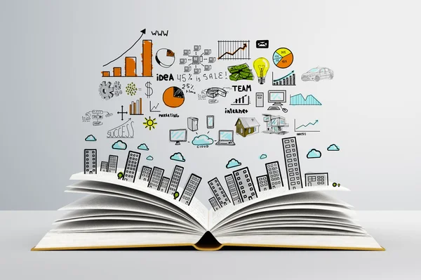

Speeches that revolve around arts and culture are ones your audience is
likely to be familiar with, such as popular entertainment, the arts and pop culture references.
From graffiti to reality television, the arts and culture theme offers broad subjects to select from when
choosing your speech topic.
Here are some intriguing questions about arts and culture that you can answer in your speech to connect with
a
wide range of people:
* Do you think all museums can offer free admission?
* How has American football influenced sports around the world?
* Do you consider graffiti to be art? Why or why not?
* Why do required reading lists in schools include literature that some consider controversial?
* Has learning a musical instrument in school affected other areas of study? If so, how?
Business topics can be relatable to those who work in a relevant sector.
This theme is broad enough that topics can affect professionals across industries.
Business-related speeches cover elements like economic processes, business practices, leadership roles and
office cultures.
The following five business topics might help your speech be more captivating to attendees:
*How to find a remote job
*The best time for employers to pay interns
*The impact of interior design in the workplace
The merits of motivating environmentally friendly practices at work
Whether to hire freelancers or direct employees for a job.
Education offers the chance to question changes that have a significant impact on students and discuss
current
affairs on the state of education. Current events in education are often public happenings. Subjects such as
teachers' union negotiations or new nationwide curricula additions can gain public attention and opinions.
You
can use this in your favor when you select an education topic for your speech:
* What are the most popular degrees to get?
* What are the merits of using Common Core math?
* What is the most effective teaching strategy?
* How do teachers' unions impact changes in education?
* Do you think teachers can tailor education plans for each student?
* When is it appropriate to consider nontraditional forms of higher education?